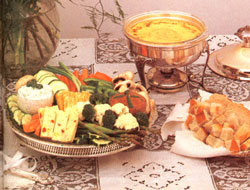

STAFF PHOTO
It's common, this time of year, to hold wedding receptions in an outdoor beauty spot. But whether your party takes place outside or in, the following dishes, perhaps adorned with fresh wildflowers, will add to the festivity of a special and joyful day.
6 cups whole wheat flour (or 3 cups whole wheat and 3 cups unbleached flour)
1-1/2 teaspoons salt
3 tablespoons baking powder
1 tablespoon cinnamon
1-1/2 teaspoons nutmeg
1 teaspoon cloves
1 teaspoon ginger
1 teaspoon cardamom
9 eggs
2 cups oil or soft butter
2-1/2 cups honey
1 teaspoon vanilla
3 cups water or fruit juice (apple, apricot, or orange)
2 cups chopped walnuts
1-1/2 cups plumped raisins (pour boiling water over the raisins and let them sit for 20 minutes)
Sift together (twice) the flour, salt, baking powder, and spices. Cream the eggs, oil, honey, and vanilla. Add the dry mixture, alternating with the water or juice, to the wet mixture, and beat well. Add the chopped nuts and drained raisins, and bake in a greased and floured pan at 350°F for 35 to 40 minutes or until the middle of the cake is springy. Cool the cakes on racks to prevent them from drying out. If you don't frost them as soon as they're cool, brush with melted butter to seal in the moisture. Makes three cakes.
6 cups sifted whole wheat flour (or 3 cups whole wheat and 3 cups unbleached flour)
1-1/2 teaspoons salt
3 tablespoons baking powder
1 teaspoon cinnamon
1-1/2 cups soft butter
2-1/2 cups honey
6 beaten eggs
6 tablespoons grated orange rind
2 cups milk or buttermilk
3 cups chopped dates
1-1/2 cups chopped walnuts
3/4 cup flour (to dust dates and nuts)
Sift together (twice) the flour, salt, baking powder, and cinnamon. Cream the butter, honey, and eggs together, and add the orange rind to that mixture. Slowly mix in the sifted, dry ingredients, alternating them with the milk. When the mixture is smooth, stir in the floured dates and nuts. Pour the batter into three greased and floured pans, and bake for 35 to 40 minutes at 350°F. Cool the layers on racks. Makes three cakes.
Either of these cakes can be topped with the following frosting.
5 packages cream cheese
2 sticks real butter
4 teaspoons vanilla
2 teaspoons almond extract
1 cup honey
Cream these ingredients together and spread them on the cooled cakes. Then decorate with fresh flowers and fresh fruit, toasted almonds, walnuts, coconut, raisins, cinnamon, date sugar, fresh mint leaves, dates, or cut-out cookies.
4 tablespoons dry yeast
2 cups warm water
4 tablespoons butter
1-1/3 cups hot water
2/3 cup molasses
2-1/2 tablespoons salt
2 tablespoons caraway seed
2 tablespoons fennel seed
3 tablespoons freshly grated orange peel
6 cups rye flour
6 cups whole wheat pastry flour
Dissolve the yeast in the warm water. In a large bowl, melt the butter in the hot water and add all of the ingredients except the flour. In a separate bowl, sift together the rye and whole wheat pastry-flour.
Add most of the flour to the liquid, stirring well to make a stiff dough. Put some of the ... flour on a lame board, and knead the dough until it's smooth and elastic. Place it in a greased howl, cover it with a Wilk towel, and let it rise in a warm place until double in size
(about 1-1/2 to 2 hours). Punch the dough down, form it into 4 loaves, place them on a well-greased baking sheet or into 1 loaf pans, and cover them. When the dough has once again doubled in sire, bake the loaves in a preheated oven at 350°F for about 45 to 50 minutes.
At least one loaf of the Swedish rye bread should be set aside (along with bowls of whipped butter and homemade mayonnaise) to be enjoyed with sliced cheeses. (Place these snacks on trays garnished with slices of fresh fruit.) Cube some of the other loaves and slice some fresh vegetables to be dunked in the following fondues and dips.
12 tablespoons flour
6 cups milk
12 tablespoons butter
2-1/2 teaspoons salt
1 tablespoon curry-powder
1 teaspoon granulated garlic
1/4 teaspoon pepper
Mix the flour with 3 cups of cold milk Melt the butter over a low flame and add the other 3 cups of milk to it. When the milk is heated, slowly add-while stirring constanly the flourmilk mixture. Put in the salt and spices, and cook the sauce over a loo heat until it thickens. Keep the sauce warm to a fondue or slow cooker.
Follow the above recipe, omitting the curand adding 2 cups of-rated cheese. (Cheddar and Swiss are both excellent choice.) Garnish with a generous amount of Fresh parsley.
Mix the following:
3 spring onions, chopped
1/4 teaspoon granulated garlic
3 stalks celery, finely chopped
1 teaspoon basil
1/2 teaspoon salt
1/4 cup crumbled blue , cheese
2 cups cottage cheese
Mix the following:
3 cups cooked red bean. mashed
1 cup tomato sauce
2 jalapeno peppers
1 teaspoon granulated garlic
2 teaspoons oregano
1 green pepper, minced salt to taste
Mix the following:
2 cups plain yogurt
1/2 teaspoon curry powder
1/2 onion, finely chopped
1 bunch fresh parsley, chopped
1/2 teaspoon basil
1/2 teaspoon oregano
1/2 teaspoon granulated garlic
1/2 teaspoon salt or 2 tablespoons tamari dash of cayenne pepper
Choose a favorite herb tea and brew enough to satisfy your guests. Make it extra strong, sweeten it with honey, and refrigerate it. Just before serving, add sliced fresh fruit ... and sparkling water for that "champagne" touch.
|
|
 |
|